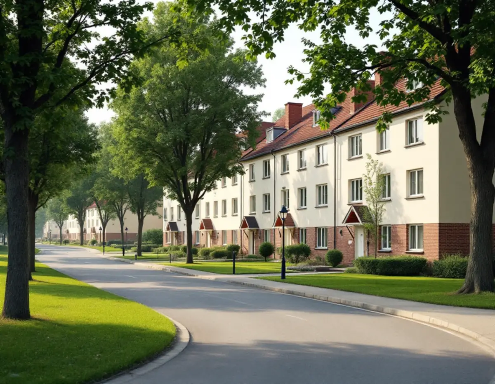
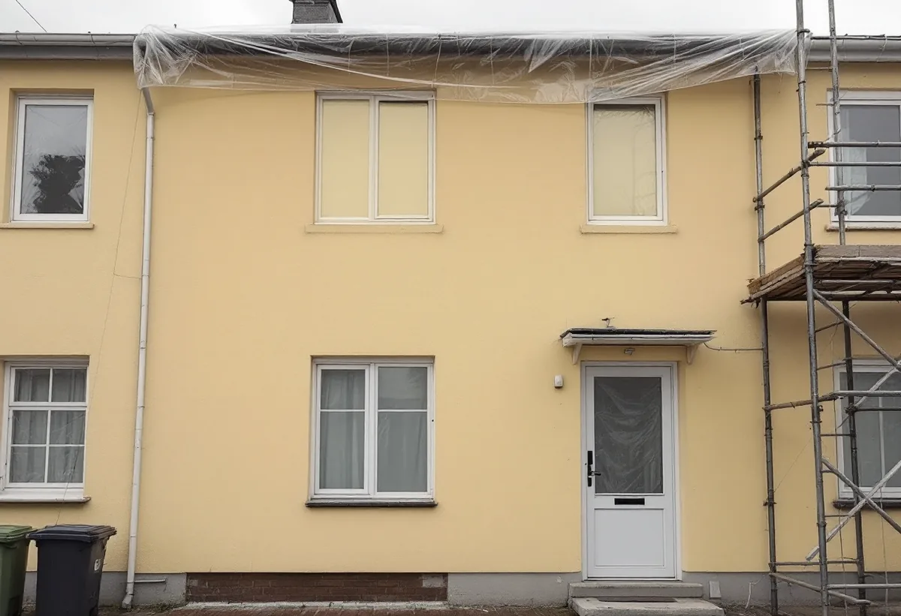

Platsbesök
Vi tittar på putsen, provar hur den gamla färgen sitter och noterar husgruppens kulör.
Vällingby byggdes som en helhet, och det märks när ett enda hus i en grupp får en annan färg. Geal Entreprenad AB målar fasader i Vällingby och Råcksta och väljer färgtyp efter putsen eller panelen på huset och kulör efter hela husgruppen.

Vällingby var den första tunnelbanestaden och invigdes 1954, enligt stadens vägledning om småhusområden. Råcksta och Hässelby gård planerades samtidigt. Närmast centrum står de högre husen, och längst ut ligger grupper av rad- och kedjehus. En bild i vägledningen visar kedjehus i Vällingby som kombinerar moderna volymer och asymmetriska gavlar med en mer traditionell fasad, regelbunden fönstersättning och material som tegel och puts.
Översiktsplanens beskrivning av riksintresset Vällingby (AB 120) säger att området byggdes ut under 1950-talet och är ett sammanhållet uttryck för det årtiondet, med bebyggelse i tydligt definierade grupper med enhetlig karaktär. Planen hänvisar till Riksantikvarieämbetets erfarenhet att ett område med en helhet från en och samma tid är mer känsligt för skada än ett område som har förändrats över tid. En kulör som bryter mot gruppen syns alltså mer här än i en blandad villastad.

Fram till mitten av 1900-talet putsades hus nästan bara med rent kalkbruk, enligt Länsstyrelsernas blad om puts. På byggnader från 1950-talet och framåt är kalkcementputs vanlig, och den är hårdare och tätare mot fukt. Riksantikvarieämbetets handbok skriver att kalkfärg har dålig vidhäftning på cementrika underlag. Bladet föreslår därför en tjockare kalkfärg med ballast av krossad dolomit på cementhaltig puts, och att kalkfärger med tillsats av plast bör undvikas.
Boverket skriver att putsbortfall nästan alltid beror på fukt, och att fuktig puts kan frysa sönder om fukten blir kvar över vintern. En färg som släpper igenom fukt gör att väggen kan torka. Boverket skriver att ett byte av färgtyp, till exempel från linoljefärg till plastfärg, kan påverka byggnadens yttre karaktärsdrag. För ett en- eller tvåbostadshus kräver det lov där utökad lovplikt gäller, och i riksintresset är det en fråga vi ställer till staden innan färgen beställs.
Riksantikvarieämbetets handbok beskriver hur kalkfärg ska strykas utomhus: från senvåren till eftersommaren och i god tid innan frost kan komma, och inte i starkt solsken. Putsen ska vara lagom fuktig, och ett skikt stryks per dag. En fasadyta målas utan uppehåll, eftersom ett avbrott mitt på väggen ger synliga gränser, så pauser läggs vid hörn eller andra naturliga gränser.
För att skydda fasaden mot för snabb uttorkning och slagregn kan ställningen behöva täckas in och få ett regnskydd upptill. Fönsterglas ska skyddas eftersom kalken etsar glas, och all kulört färg bör blandas vid ett och samma tillfälle för att undvika skillnader i kulör. Gamla, löst sittande färglager tas bort ner till fast underlag innan något nytt stryks. Spritputs rengörs enligt handboken skonsamt med våt- eller vattenblästring, medan slät puts normalt borstas med stålborste. På kalkputs lagas skador med kalkputs som liknar den befintliga, och lagningarna kalkas tills de ser ut som omgivande ytor.
Enligt Stockholms stad behöver du söka lov för annars lovfria åtgärder om huset ligger inom ett riksintresse för kulturmiljövården, som visas med blå ring i Stadsmuseets klassificeringskarta. Detsamma gäller hus som är markerade med blått eller grönt i kartan. Är du osäker kan Stadsmuseet göra en bedömning. Vi tar fram dagens kulör och färgtyp från huset och använder dem som utgångspunkt.
Är radhuset en bostadsrätt räknas fasaden som gemensam yta, och Skatteverket ger inget rotavdrag för att måla den. Vill föreningen måla om hela längan samtidigt planerar vi ställning och arbetsordning hus för hus, så att varje fasadyta kan strykas utan avbrott. Om invändig målning, smidesräcken och radhusområdena Atlantis och Omega kan du läsa under målare i Vällingby, och om färgtyper i stort under målare.
Vi tittar på putsen, provar hur den gamla färgen sitter och noterar husgruppens kulör.
Kontroll i Stadsmuseets karta och vid behov en bedömning från museet.
Putslagning, färgtyp, antal strykningar och ROT-avdrag står var för sig.
Lös färg tas bort, skador lagas och fönster och sockel skyddas.
Ett skikt per dag i lämpligt väder, med uppehåll vid hörnen.
Vi går igenom fasaden med dig när ställningen tas ner.
För ett radhus eller en villa med äganderätt ger Skatteverket rotavdrag för att måla och rengöra fasaden och för att sätta upp och ta ner byggnadsställningen. För en bostadsrätt gäller avdraget bara arbete inne i bostaden.
Avdraget är 30 procent av arbetskostnaden, högst 50 000 kr per person och år och högst 75 000 kr tillsammans med rutavdrag. Färg, material och resor ger inget avdrag. Geal drar avdraget på fakturan.
Hur mycket puts som behöver lagas, vilken färgtyp som passar, hur många strykningar det blir och om ställningen behöver väderskydd väger mest. Efter ett kostnadsfritt platsbesök får du ett skriftligt kostnadsförslag.
Fasad, fönster och invändig målning.
Målare i Stockholm →Takbyte, takbesiktning och plåtarbeten.
Takläggare i Vällingby →Bygga till i riksintresset.
Byggföretag i Vällingby →Tegel, puts och skivor på tunnelbanestadens hus.
Fasadrenovering i Vällingby →Gamla mattor, lim och asbest.
Golvläggare i Vällingby →Radhus och lägenheter i ABC-staden.
Målare i Vällingby →Takplåt, rännor och beslag i riksintresset.
Plåtslagare i Vällingby →Entréer, dörrar och räcken på radhusen.
Snickare i Vällingby →